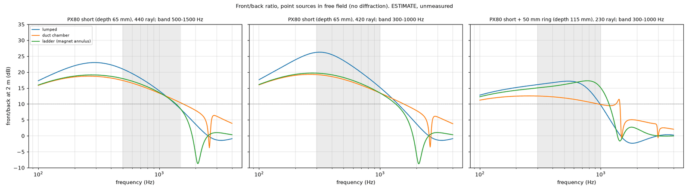
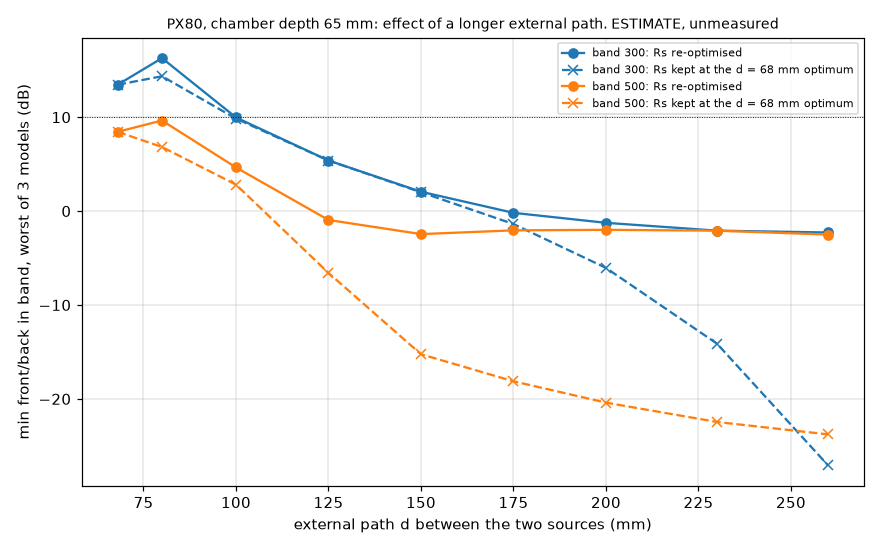
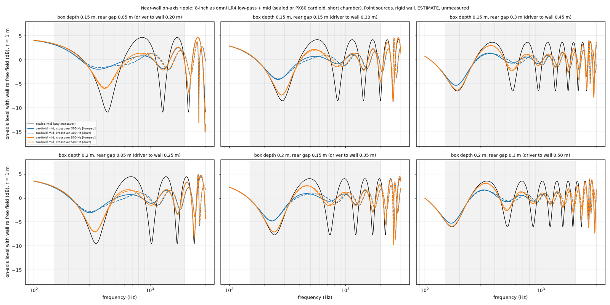
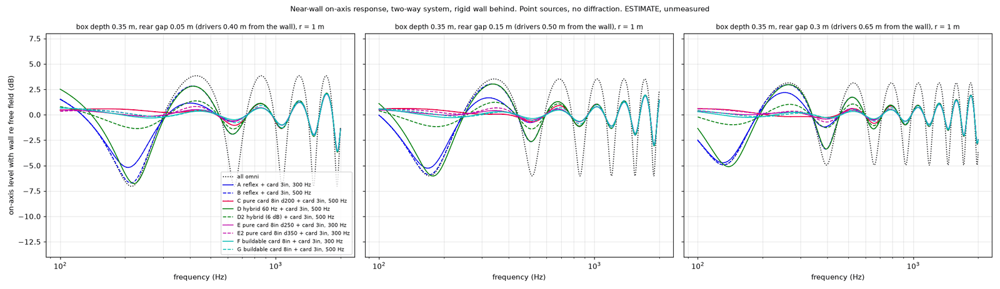
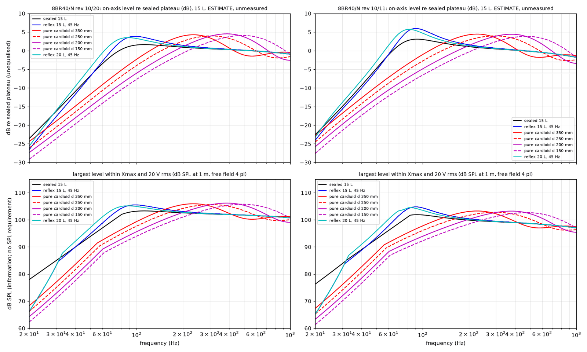

A near-wall mini monitor: a 3" Beyma 3FR30V2 mid-high in a small 3D-printed pod whose rear vents cancel the sound behind it (passive cardioid), on top of a slim reflex box with a Beyma 8BR40/N 8" bass driver.
What it is. A very linear mini monitor for casual home listening and small studios, meant to stand with its rear within 0.3 m of the front wall. Close to a wall, sound radiated backwards reflects and cancels the direct sound at some frequencies, which shows as dips and peaks in the midrange. A passive cardioid enclosure reduces the rear radiation: the back of the 3" driver vents through acoustic resistance (a screen or foam) so that, behind the box, it arrives in antiphase with the front and cancels. The concept reference is the principle used in the Dutch & Dutch 8c (cardioid mid, bass near the wall); the design, layout and appearance are Tek's own. High output is not a goal.
Where it stands (24 Nov). Stage 1 is a modular 3D-printed test rig for one 3" driver with swappable rear plates, to find a cardioid tuning by measurement. Lumped models (point sources, no box diffraction) give a first tuning: a short 65 mm chamber behind the driver and one perforated rear plate (PX80) with a resistive screen of about 420–440 rayl, which in the model holds at least 10 dB front-to-back over 300 Hz–1 kHz. The models also show the catch: once the path round the box grows to the 170–180 mm a full-width box implies, a rear plate may not work at all, so vent position on the real pod needs a boundary-element (BEM) simulation or a measurement. The 8" stays a bass-reflex section aimed at the deepest bass the slim box allows; a cardioid 8" would cut near-wall ripple further but gives up too much bass extension. A 2.5-way variant (two 3" drivers sharing the range below about 1 kHz, crossed to the 8" at 250 Hz) and the simplest normal 2-way layout are being compared; that run is done but not yet reviewed.
Next: review the 2.5-way and 2-way comparison and choose the layout; a BEM run of the real pod to place the vents; then CAD of the test rig. The prototype is tested active (DSP crossover) first; the final speaker is fully passive.
| Use | Very linear mini monitor that minimises boundary interference in the midrange near walls; casual home listening and small studios |
|---|---|
| Placement | Cabinet rear within 0.3 m of the front wall. First front-wall cancellation notch for the drivers: 170–430 Hz derived |
| Drivers | Mid-high: Beyma 3FR30V2 (3" full-range), one, or two in the 2.5-way variant. Bass: Beyma 8BR40/N (8", 8 Ω) |
| Mid enclosure | Passive cardioid (resistive rear vents). Trapezoidal pod: bottom as wide as the bass box, narrowing to the top |
| Cardioid target | At least 10 dB at 180° against 0°, from the crossover to about three times the crossover (300 Hz–1 kHz, or 500 Hz–1.5 kHz); 15 dB stretch |
| Crossover | Open: 250 Hz (2.5-way, under study), 300–500 Hz range tested so far; chosen by measurement. Fully passive in the final speaker; active on a DSP for the prototype |
| Bass section | Bass reflex, aiming for the deepest extension the slim box allows (full-range monitor without a sub) |
| Width | The slimmest reflex box for the 8BR40/N: 221 mm with 18 mm wooden sides, 212 mm with 4 mm printed walls estimate (unmeasured) |
| Maximum level | No requirement. Excursion and thermal limits are reported for information only |
| Manufacture | 3D print, PLA for the test rig. Mid pod printed as two parts, each one piece: the baffle and the rear chamber; vent plates and screens as small separate parts |
| Coverage, weight | Not set |
| Measurement | Critical (will be measured): 0° and 180° sweeps for each rear-plate variant, one microphone |
| 23 Nov 2026 | Project started. Stage 1 is a modular printed test rig for one 3" driver with swappable rear-vent plates; the tuning is found by measurement. |
|---|---|
| 23 Nov 2026 | Pass mark at least 10 dB rear rejection, 15 dB stretch. Why: a modest first goal for a passive rig assumption. |
| 23 Nov 2026 | Driver is the 3FR30V2, not the older 3FR30 (different Fs, cutout and depth). Datasheet T/S values used provisionally: Fs 133 Hz, Qts 0.51, Vas 1 L, Sd 30 cm², Xmax 2 mm. Rig CAD waits for the fixing holes and terminals of the real driver. |
| 23 Nov 2026 | Plate set cut from six to two: P0 blank (sealed reference) and one fully perforated plate; smaller vents are made by taping over openings. Ducts and 10–20 cm² ports dropped. Why: their air mass puts the vent resonance inside the band. |
| 23 Nov 2026 | The rig is built at the width of the bass box it will sit on. Why: box and baffle size change the cardioid tuning, which the lumped model cannot show. |
| 23 Nov 2026 | Purpose: linear near-wall monitor, not loud. No SPL requirement; the crossover rests on linearity and near-wall behaviour. |
| 23 Nov 2026 | Perforated plate revised to PX80: 80 mm round perforated field, about 60 % open (30 cm², holes about 8 mm), 3 mm thick, screen clamped behind; short chamber 80 mm bore × 65 mm deep. One plate serves both 300 Hz and 500 Hz crossovers. Why: the 500 Hz–1.5 kHz band needs a short, narrow chamber. |
| 23 Nov 2026 | Mid pod: trapezoid; baffle and rear chamber each printed as one solid part. |
| 23 Nov 2026 | 8" stays bass reflex, aiming for full-range extension; the cardioid 8" is set aside. Why: reflex 20 L reaches F3 about 53 Hz against 95–140 Hz for a cardioid 8" estimate (unmeasured). |
| 23 Nov 2026 | A 2.5-way variant added to the study (two 3" drivers, 250 Hz to the 8"), and the simplest normal 2-way layout (one 3" over a front-firing 8"). A rear-firing 8" with side vents on the mid pod is also under study. |
| 23 Nov 2026 | Fully passive final speaker; the prototype is tested active on a DSP first, and the passive crossover copies the DSP settings that work. |
Two point sources (cone and vent) in free field, no box diffraction, screen as a pure resistance, provisional datasheet driver data. Three models of the chamber: lumped, duct, and ladder (with the annulus round the 69 mm magnet). The figure quoted is the worst of the three. Front/back at 2 m.
| PX80, short chamber, 300 Hz–1 kHz | 13.5 dB minimum at 420 rayl; 10.1 dB worst case over the assumption envelope; best screen 300–570 rayl |
|---|---|
| PX80, short chamber, 500 Hz–1.5 kHz | 8.4 dB minimum at 440 rayl (target 10 dB: not met); 5.8 dB worst case; at least 10 dB up to 1355–1579 Hz |
| With a 50 mm spacer ring (115 mm deep) | 9.6 dB over 300 Hz–1 kHz; below 0 dB over 500 Hz–1.5 kHz. Lowest priority |
| Longer path round the box | 300 Hz band falls to 10.0 dB at 100 mm and 5.4 dB at 125 mm; both bands below 0 dB from 175 mm. The shortest path round a 212–221 mm box is about 171–176 mm derived geometry, so a rear plate on the full-width pod may not work; vents near the baffle or on the sides may be needed. Only BEM or a measurement can settle this |
| Excursion (information only) | Largest peak level within Xmax at 1 m, equalised LR4: about 102.5–102.9 dB crossed at 300 Hz, 115.4–116.2 dB at 500 Hz |


Rigid wall behind, listener at 1 m on axis, 8" modelled as an omnidirectional LR4 low-pass source, cabinet rear 0.05–0.30 m from the wall. Ripple is the peak-to-dip range of the on-axis response with the wall, relative to free field.
| 3" mid, 150 Hz–1 kHz | Sealed mid 9.5–15.6 dB; cardioid mid crossed at 300 Hz 4.8–6.9 dB; at 500 Hz 8.9–9.7 dB. 300 Hz is better in all 18 cases, by 2.0–4.4 dB |
|---|---|
| Whole system, 100 Hz–1 kHz (box depth 0.35 m) | All omnidirectional 8.1–10.9 dB; reflex 8" + cardioid 3" at 300 Hz 6.7–6.9 dB; pure cardioid 8" (200 mm path) + cardioid 3" crossed at 500 Hz 1.9–2.1 dB. The ranking is robust; the 1–3 dB values rest on unmeasured rejection |



The run comparing the single 3" 2-way, the 2.5-way with two 3" drivers (shared or separate chambers), front- or rear-firing 8", reflex alignments of the slim box and side-vent paths is done. Its results are not published here until reviewed. Estimate (unmeasured).
No print settings yet: no CAD, slicer run or print-log entry exists. Planned parts: mid-pod baffle, mid rear chamber, P0 blank plate, PX80 perforated plate, screen clamp frames.
| Printer | 256 mm-bed printer (planned); every part to fit one bed |
|---|---|
| Material / brand | PLA (test rig) / not set |
| Nozzle; layer height | not set; not set |
| Walls; top / bottom layers | not set; not set |
| Infill % and pattern | not set |
| Supports; orientation | not set; not set |
| Splits and joints | None planned: baffle and chamber one piece each; plates bolt to the chamber (fixings not set) |
| Temperatures; speed / profile | not set; not set |
| Brim | not set |
| Slicer and profile version | not set |
| Estimated time, mass | not set |
Sources: Balogh, US patent 4,054,748, cardioid radiator (weight 3); Gunness, US patent 10,123,111, passive cardioid loudspeaker (weight 3); Meyer Sound, US patent 8,428,284, passive low-frequency directional loudspeaker (weight 3); Beyma, 8BR40/N data sheets, two revisions (weight 4); Beyma, 3FR30V2 data sheet (weight 4, provisional, read from excerpts). Concept reference: Dutch & Dutch 8c.